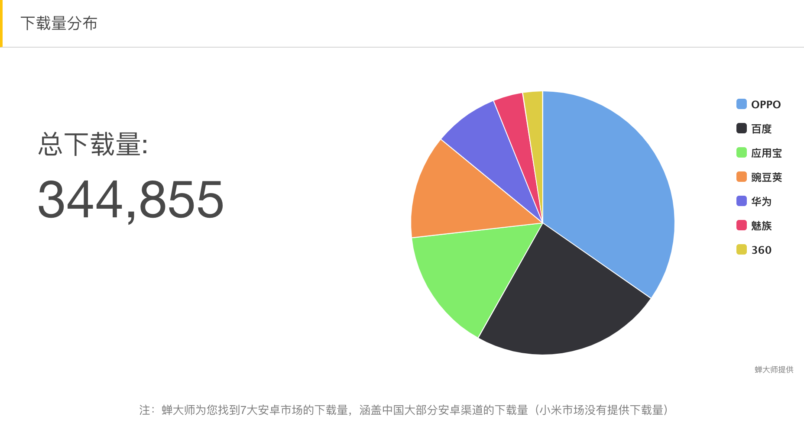

Anycodes V4.0 电脑版上线）
Anycodes全新版本（4.0）电脑版上线
荣获产城人工智能研究奖
Anycodes在线编程团队荣获浙江大学产城人工智能研究奖三等奖。
Anycodes 4.0 开发启动
经历了团队的变化，项目的减法，Anycodes在线编程重整旗鼓，开始4.0版本的开发，并预计在2019年2月上线。
手机客户端下载量突破30万
Anycodes在线编程手机客户端下载量突破30万
创新杯中国区总决赛三等奖
Anycodes在2018年微软举办的创新杯中国区总决赛上表现优异，获得三等奖。
创新杯苏州赛区夺冠
Anycodes在2018年微软举办的创新杯苏州赛区比赛中，凭借优秀表现夺得冠军，获得直通半决赛名额。
多个子功能永久关停
Anycodes在线编程平台先后关停在线课堂、云端课堂、资源共享站、代码机器人等若干项目，项目广度开始缩紧。
程序员题库版权申请成功
程序员题库APP，软件著作权申请成功。
Anycodes在线编程登陆新华网
新华网网以《大学生科技创新大赛落幕
全杭州高校“学霸”都来了》介绍了科技创新比赛，其中大量篇幅介绍Anycodes项目和所取得的成就。
Anycodes在线编程登陆浙江新闻
浙江新闻网以《浙大学生发明编程平台 让你能自由写代码》为题发布了Anycodes团队在各类活动比赛中的优异表现。
首届天翼云开发大赛夺铜
首届天翼云大学生软件开发大赛，Anycodes团队获得铜奖。
题库功能独立
Anycodes在线编程平台正式关停题库功能，删除题库数据。启动全新项目：程序员题库，即将原题库功能独立为子项目运营，上线微信小程序（同名：程序员题库）。
大学生移动开发大赛获得二等奖
第四届全国大学生移动开发大赛在武汉中国地质大学举行，Anycodes团队凭借出色表现荣获二等奖。
杭州科技创新大赛夺头奖
第三届杭州市大学生科技创新大赛，Anycodes团队获得一等奖。
沃土杯网络创业大赛获得二等奖
第三届杭州市大学生科技创新大赛，Anycodes团队获得一等奖。
手机编程软件版权申请成功
Anycodes在线编程手机客户端，手机编程软件软件著作权申请成功。
Anycodes开启编程直播
Anycodes在Bilibili视频网站注册账号，并开始直播，主要直播内容是编程相关知识的讲解，在线编写代码等，同时后期也会相继录一些视频教程等。
云端资源站正式下线
由于云端资源站对带宽资源要求过高，Anycodes团队无法承受如此大的金额支持，故永久下线云端资源，并告知用户提前备份，届时子站关闭。
Anycodes3.0 版权申请成功
Anycodes在线编程3.0版本，软件著作权完成审批。
新版Anycodes开发完成
Anycodes 3.0版本完成开发。新版增加了多多种主题，同时语言扩增到13种，支持联想输入等功能。项目从PHP已经转为Python（Django框架）。
编程词典软著申请成功
Anycodes在线编程旗下软件：编程词典软件著作权申请成功.
编程词典功能正式上线
Anycodes在线编程平台，上线了编程词典功能，用户可以通过编程词典，查询不同语言的常见单词含义。
Anycodes故事改编微电影上线
Anycodes在线编程真实故事改编的微电影正式上线。
挑战杯国家级铜奖
荣获第二届创青春全国大学生创新创业大赛国家级铜奖。
Anycodes在线编程近6个月访问量2227829。算是创下了Anycodes连续6个月访问总量最高的记录。
互联网+国家级铜奖
荣获第二届互联网+全国大学生创新创业大赛国家级铜奖。
Anycodes外观专利完成审批
Anycodes在线编程外观专利证书完成审批。
登陆吉林省创业英雄汇
Anycodes在线编程项目登陆吉林省大学生创业英雄汇。视频在腾讯新闻播放。
互联网+吉林省一等奖
荣获第二届互联网+全国大学生创新创业大赛吉林赛区一等奖荣誉。
问答系统与题库系统上线
海量面试题，随时随地进行学习，有问题去问答中心提个问？Anycodes在线编程两大子产品正式上线，并且和打通客户端，完美融合。
代码机器人上线
Anycodes在线编程代码机器人上线，w用户可以通过QQ，发送代码+内容，查询代码，例如代码 贪吃蛇，就会给用户返回贪吃蛇相关代码，数据库存放超5万份可供学习和参考的代码。
荣获青年赛省银奖
Anycodes在线编程荣获吉林省第三届创青春青年创业大赛商工组银奖，并作为代表到上海参加总决赛。
基础教程功能正式上线
Anycodes在线编程基础教程功能正式完成测试，融合到了客户端中，并有望成为热点。
荣获挑战杯省金奖
Anycodes在线编程荣获吉林省第二届创青春大学生创新创业大赛金奖。
宣传视频2.0 上线
Anycodes在线编程宣传视频2.0正式上线。
被腾讯新闻报道
Anycodes在线编程，有幸被自媒体报道，报道新闻同步到腾讯新闻、天天快报等多家媒体。
连续一周日均IP近6000
连续一周，Anycodes在线编程网站日均IP近6000，日均访问14000+，日均请求60000+次。
云端资源上线
Anycodes云端资源功能正式上线，提供海量编程资料，可以自由存储/分享资源，与Anycodes在线编程打通。
客户端 V2.5 上线
这版客户端算是正式奠定了Anycodes的手机客户端的基础，尤其是那张不变的封面：学习编程并不枯燥，因为有在线编程 ———— 刘宇。
手机客户端正式上线
Anycodes在线编程平台，成员自掏腰包，购买Dell塔式服务器T100，并将项目部署上，非常感谢@小龙前辈，帮忙做相关运维工作，实现服务器的内网穿透，至此，Anycodes在线编程数据存放在自有服务器上，对外显示阿里云IP。
宣传视频1.0 韩文版上线
由@海林同学帮忙录配音，采用1.0中文素材，宣传视频1.0 韩文版上线。
新服务器启用
Anycodes在线编程平台，成员自掏腰包，购买Dell塔式服务器T100，并将项目部署上，非常感谢@小龙前辈，帮忙做相关运维工作，实现服务器的内网穿透，至此，Anycodes在线编程数据存放在自有服务器上，对外显示阿里云IP。
宣传视频1.0 上线
Anycodes在线编程宣传视频1.0正式上线。
用户量突破1000IP
平台的日访问量，突破1000IP，也收到了很多小伙伴们的建议，由于增加了云课堂功能，之前小小的云服务器显得有些力不从心，故团队内部开始讨论方案。
第一张奖状
Anycodes在吉林省第一届互联网+大学生创新创业大赛表现优异，取得了省级铜奖。
在线课堂上线
将更多课堂搬上Anycodes，Anycodes首次尝试将网上比较流行编程的课程搬上了平台，免费为大家提供在线学习功能，并启动二级域名：class.anycodes.cn。
论坛功能上线
Anycodes在线编程平台，通过开源项目：Discuz，采用其X2.5版本，正式上线编程论坛，启动二级域名：bbs.anycodes.cn。
参赛：第一届吉林省互联网+
Anycodes在线编程，幸运获得了第一届吉林省互联网+大学生创新创业大赛复赛机会，团队成员前往吉林长春吉林大学参赛。
Anycodes V2.0 上线
Anycodes成功申请了第一份软件著作权，与此同时，通过IP访问的在线编程平台正式启动全新域名：anycodes.cn，云服务器来自阿里云，Anycodes在线编程项目，正式上线！
客户端 1.0 bate上线
由于购买的域名想要解析到国内服务器需要备案，所以团队为了让Anycodes更早和大家见面，通过Webview封装了一套安卓/iOS客户端，命名为1.0 bate，正式上线。
被迫上线
参加延边大学第一届互联网+大学生创新创业大赛，被评委们质疑项目真实性以及可实现性，故团队成员被迫连夜在阿里云购买服务器，上线Anycodes在线编程2.0 bate版本，功能并不完善，但是支持了基础的在线编程功能。
火花碰撞
偶遇@真灵前辈，一拍即合，决定将之前的构思：在线编程发扬光大，开始真正准备线编程项目，并将实验性的版本定为AnycodeX V1.0。
项目构思
自学编程之余，一直就在思考，如果能有一个可以随时随地进行手机编程、网页编程的软件，是一件多么Cool的事情，自此，开始构思在线编程项目。